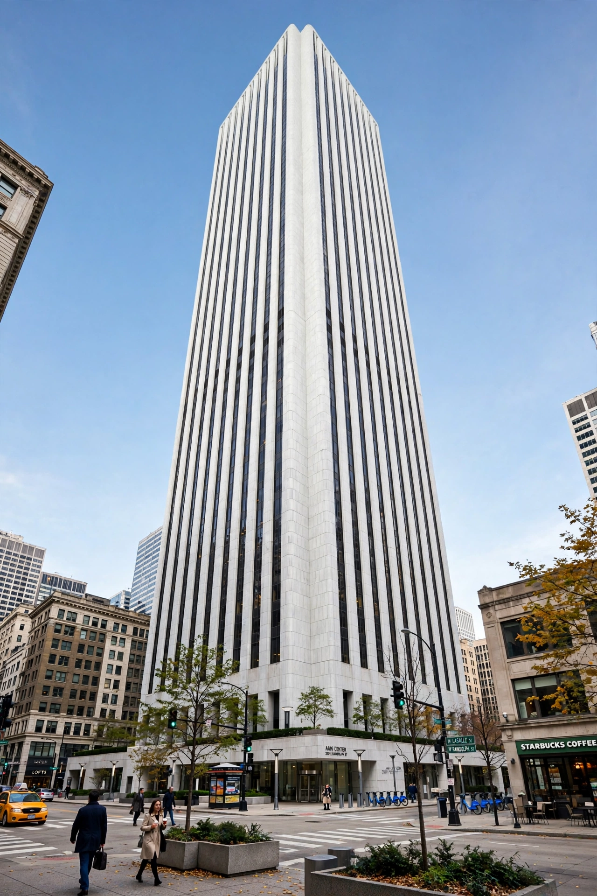

The Aon Center (200 East Randolph Street, Chicago, Illinois) is a modern supertall skyscraper in the Chicago Loop, standing immediately east of the Chicago River. At 1,136 feet (346 m) tall with 83 stories, it was the tallest building in Chicago when completed in 1973, a title it held until the completion of Willis Tower (then Sears Tower) in 1974. It remains one of the tallest buildings in the United States.

| Aon Center | |
| Former names | Standard Oil Building; Amoco Building |
|---|---|
| Location | 200 East Randolph Street, Chicago, Illinois |
| Completed | 1973 |
| Height | 1,136 ft (346 m) |
| Floors | 83 |
| Architect | Edward Durell Stone & Associates; Perkins & Will |
The building was constructed as the headquarters of the Standard Oil Company of Indiana and was known as the Standard Oil Building. When Standard Oil changed its name to Amoco in 1985, the building was renamed the Amoco Building. In 1999, after Amoco merged with BP, the building was sold, and Aon Corporation acquired the naming rights, giving the tower its current name.
The tower was originally clad in thin slabs of Italian Carrara marble. The marble, however, began to bow and crack under Chicago's harsh weather cycles, and in a widely reported incident in 1988 a slab detached and crashed into the roof of the neighboring Prudential Building. Between 1990 and 1992 the entire facade was re-clad in thicker Mount Airy granite at a cost estimated at around $80 million — roughly half the original construction cost. Much of the removed marble was crushed into landscaping material or repurposed.
Designed by Edward Durell Stone with Perkins & Will, the Aon Center is a rectangular tube structure with a distinctive V-shaped column arrangement visible at its base. The tube-frame design, similar in concept to that of the original World Trade Center towers in New York — also designed by Stone's firm in the same era — allowed column-free interior floors. The building's plaza features a sunken fountain and landscaping.
Major tenants have included Aon plc, BP, and various law and consulting firms. The building houses a large parking garage and connects to Chicago's pedway system.